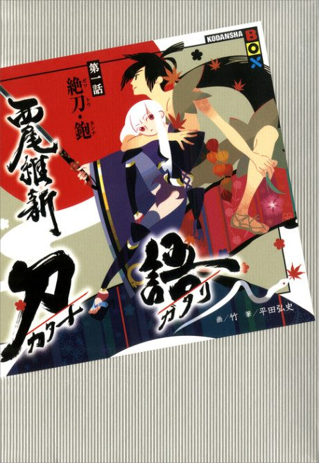

Katanagatari
刀語
Togame, a strategist, hires Shichika, a swordsman who fights without a sword, to collect twelve legendary blades.
The anime covers the whole light novel.
8.1AniList score
—Animeter, no votes yet
12episodes
Rate it or report where you stopped
Anime finished. Where does the story go next?
StatusFully adapted
The 12-episode anime adapts the whole light novel series, one volume per episode, so there is nothing left to continue.